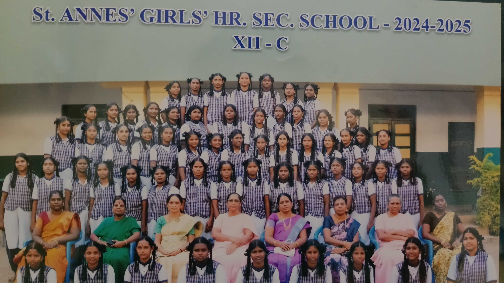
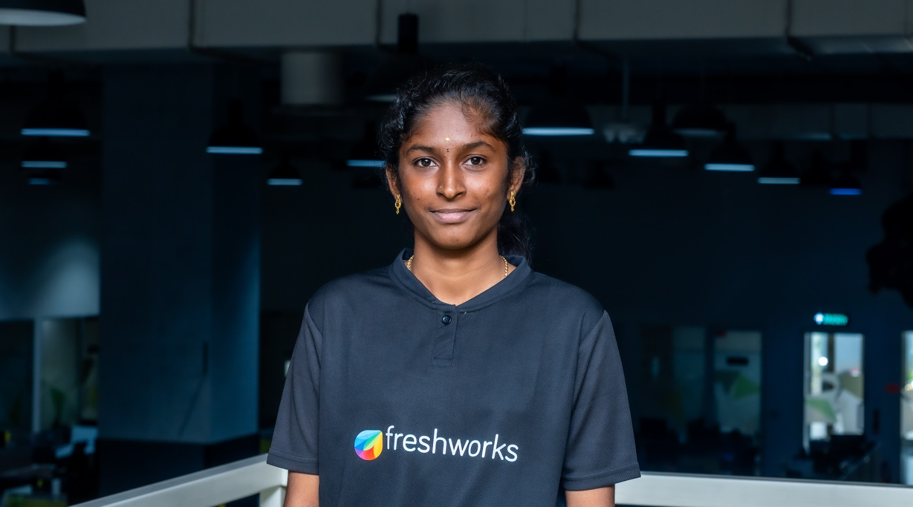
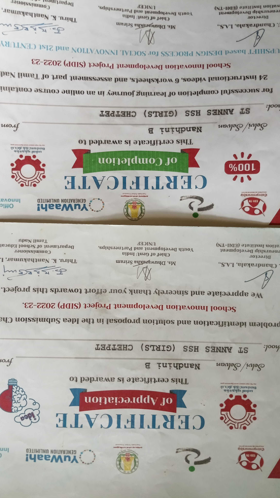
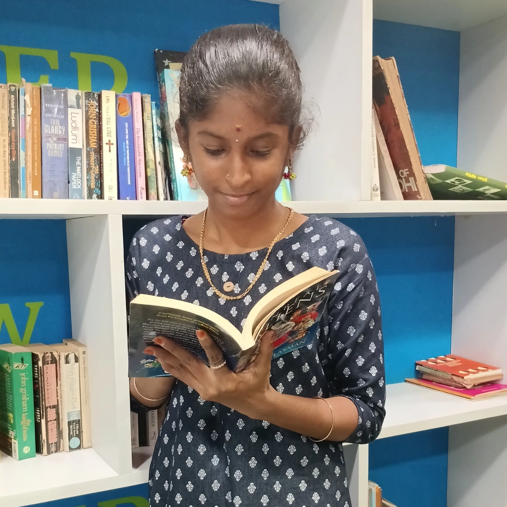
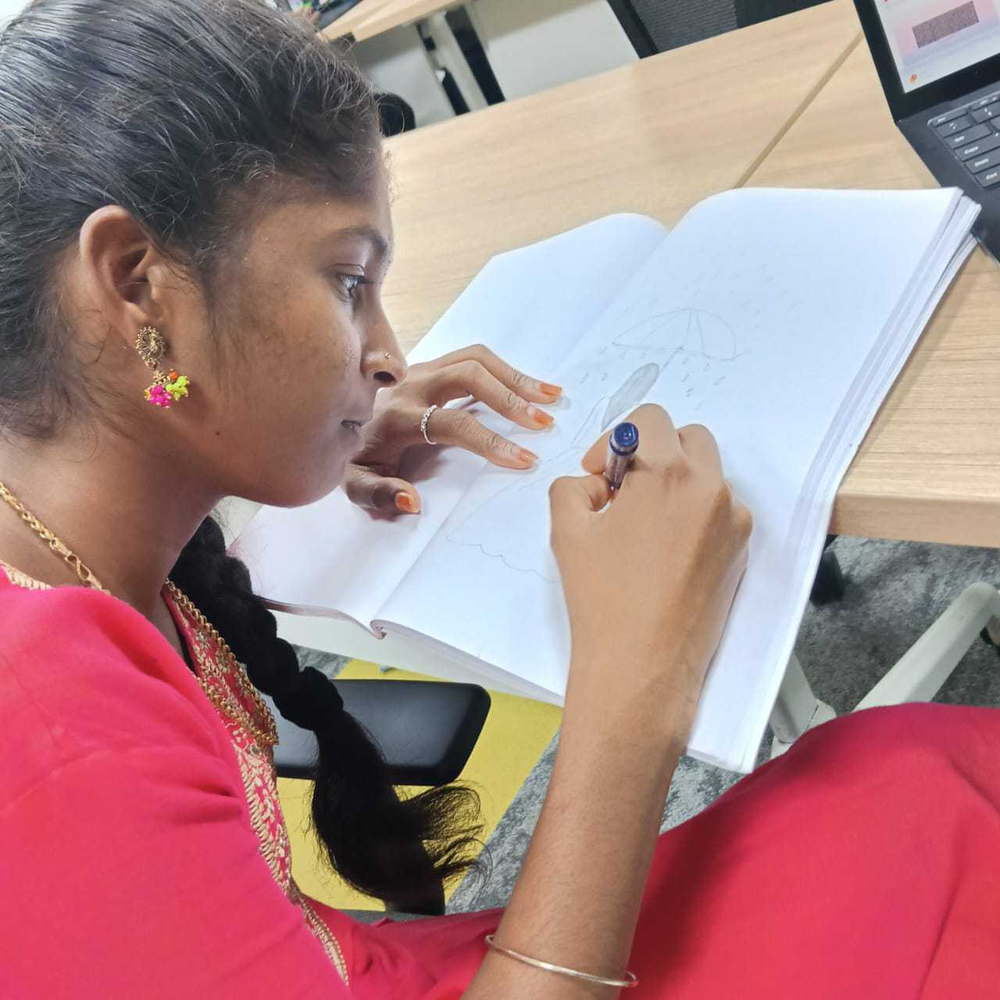
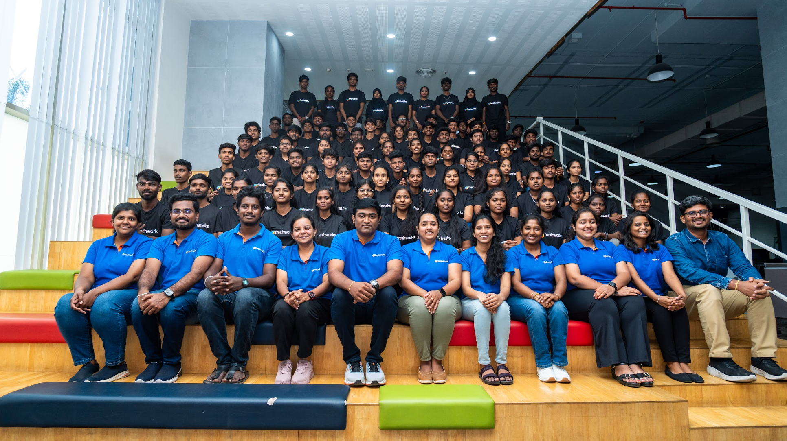

About Me







Hello! I am Nandhini. I am 17 years old. I live in Chennai, and my native is Thiruvannamalai. I come from a simple and supportive family. My family always encourages me to learn new things and grow. I completed my 12th standard. After school, I decided to improve my skills instead of going to regular college. So, I joined a SIDP course. With my mother’s support, I got the chance to join Freshworks STS Software Academy. Joining the academy changed my life. I learned many technical skills, especially web development. Now, I can create websites on my own. This increased my confidence and interest in technology. I also improved my communication and personal skills. Through English activities, I became better at speaking English. I learned presentation skills, communication skills, and teamwork. I took part in a storytelling competition and spoke confidently in front of others. This was my first achievement and helped me reduce my fear of public speaking. I also worked with my team in workplace activities, and we won first prize. This taught me teamwork, leadership, and responsibility. Overall, this journey helped me grow as a person. I am still learning new skills and working towards a good career in the technology field.